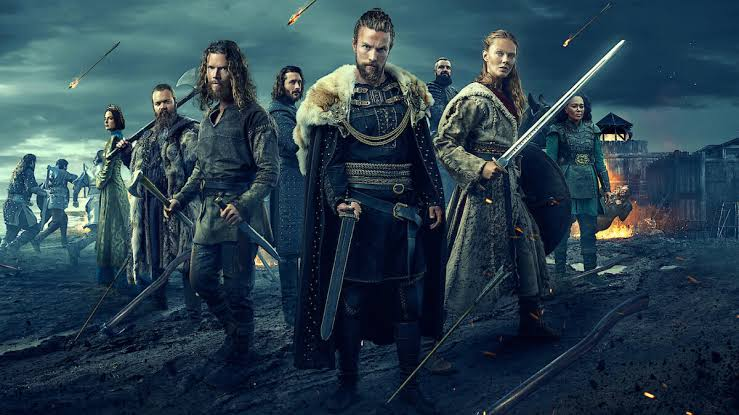

"Witness the beginning of the end of the Viking Age."
Set one hundred years after the events of the original 'Vikings' series, Vikings: Valhalla chronicles the heroic adventures of some of the most famous Vikings who ever lived—the legendary explorer Leif Eriksson, his fiery and headstrong sister Freydis Eriksdotter, and the ambitious Nordic prince Harald Sigurdsson. As tensions between the Vikings and the English royals reach a bloody breaking point and as the Vikings themselves clash over their conflicting Christian and Pagan beliefs, these three characters begin an epic journey that will take them across oceans and through battlefields, from Kattegat to England and beyond, as they fight for survival and glory.